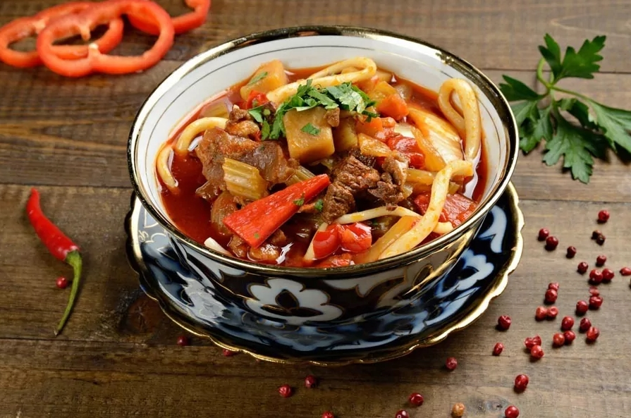

приготовление:
-
Заранее сварить куриный или овощной бульон.
-
Разогреть в казане или кастрюле с толстым дном растительное масло, полностью покрывая дно. Нарезать кубиками 500 г говядины, а 1 большую луковицу — перьями. Выложить мясо и лук в разогретое масло и обжарить.
-
Вымыть и очистить овощи. Нарезать длинными брусочками 2 моркови, половину репы или турнепса, 2 картофелины, 1 сладкий перец, 4 стебля сельдерея, 1 цуккини и 1 баклажан.
-
Добавить к мясу и луку 2 ст. л. томатной пасты и немного обжарить. Добавить морковь, 1 ч. л. чёрного перца, 1 ст. л. кумина, 2 ст. л. сладкой паприки и 3 ч. л. соли. Перемешать, немного обжарить и влить 1 л воды.
-
Сначала добавить репу или турнепс, через 10 минут — остальные овощи. Тушить всё вместе ещё 15 минут. Добавить мелко нарезанную свежую зелень, перемешать и готовить ещё пару минут.
-
Для острого соуса ладжан очистить 3 острых перца и измельчить в блендере с 6 зубчиками чеснока и 0,5 ст. л. воды до состояния кашицы. Обжарить на сковороде с растительным маслом, хорошо посолить и добавить 2 ч. л. кориандра. Влить 3 ст. л. уксуса, дать соусу остыть и переложить в банку. Хранить в холодильнике.
-
500 г свежей лапши разделить на порции и слегка смазать оливковым маслом. Вскипятить воду, хорошо посолить и отварить лапшу по инструкции на упаковке, не давая ей прилипнуть ко дну.
-
Разложить по тарелкам лапшу, добавить овощную подливу с мясом и залить бульоном. Подавать с острым соусом по вкусу.